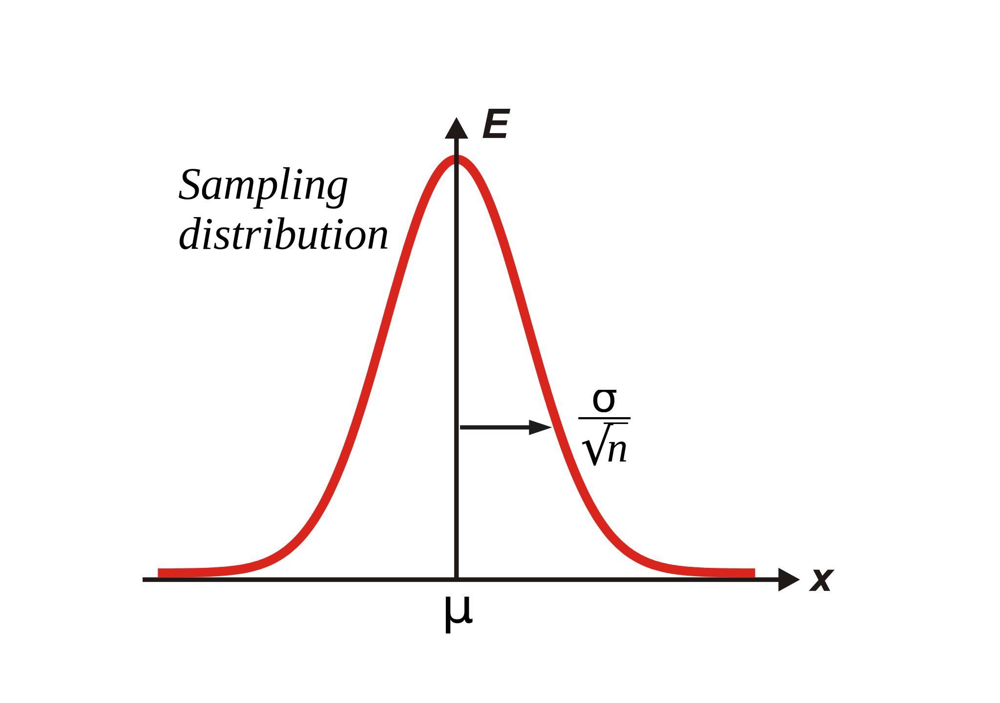
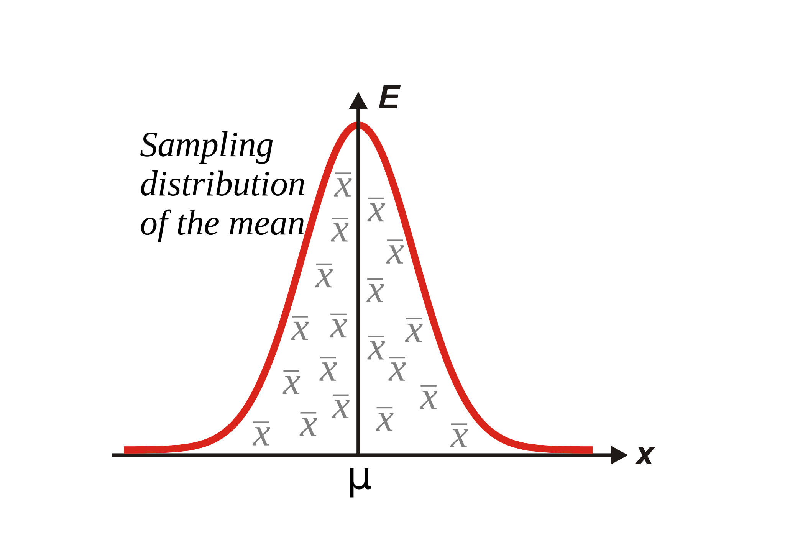

統計概論
科學的決策框架
2018.02.26
杜岳華
Outline
- 資料觀點
- 機率觀點
- Statistics is about inference and estimation
- Estimation
- 中央極限定理（Central Limit Theorem）
- Hypothesis test
- Maximum Likelihood Estimation
資料觀點
統計是幫我們從資料中萃取知識跟資訊的技術
假設：藉由蒐集資料可以讓我們了解這個世界
也就是，資料呈現了真實世界的面貌
依據資料分類
- Continuous data
- Real-valued data
- Discrete data
- Counting data
- Ordinal data
- Nominal data
- Binary data
- Categorical data
Real-valued data
eg. 身高、體重、時間、
空間（長度、體積）
Counting data
eg. 網站點擊次數
影片瀏覽次數
Ordinal data (次序資料)
eg. 名次、排序
Nominal data (名目資料)
eg. 性別、出生年、居住縣市
沒辦法直接分析的資料
eg. 文章、陳述性的句子
Noise!
我們從這個世界蒐集到的資料都不那麼完美
eg. 純水的 pH值是7.0，但 pH meter測出來都不會是準確的7.0，一定含有小數點
處理資料都會遇到不確定性（uncertainty）
我們要如何處理不確定性？
我們要怎麼說"純水的 pH值是7.0"
機率觀點
處理不確定性的絕佳手段是引進機率
把問題轉化為：
這件事所發生的機率為何？
也就是，在大多數情況下
純水的 pH值是接近7.0
但是怎麼知道是7.0，而不是7.001，或是其他數字？
機率的引進 P(X=x)
- 樣本空間 (sample space,
Ω ):在試驗中，所有可能出現的元素的集合- {1, 2, 3, 4, 5, 6}
- 事件 (event,
x ):樣本空間的子集，用簡單的數字來代表x = {1}x = {1, 2, 3}
- 隨機變數 (random variable,
X ):用來代表變項
事件發生的機率
x = {1}=>P(X=1) x = {1, 2, 3}=>P(1≤X≤3) x ？=>P(X=x)
P(X=x)=?
I don't know.
Maybe take a look at the distribution of data?
Maybe get a hypothesis yourself?
We usually use normal distribution.
(but not always fit, worth give it a try!)

在資料的分佈中我們會探討兩個趨勢：
- 集中趨勢
- mean（平均值）
- median（中位數）
- mode（眾數）
- 離散趨勢
- standard deviation（標準差）
- quartile（四分位數）
- max, min（最大最小值）
在不確定性的世界不要奢望確定性，那不存在
只存在大多數情況及例外
Statistics is about inference and estimation

我們假設：
- 我們的樣本都是從同一個母體來的
- 樣本之間是互相獨立的
統計量
我們計算統計量：
x¯ s
希望可以推估母體（機率模型）的參數
μ σ
Expectation operator (期望值運算子)
Central Limit Theorem




Central Limit Theorem
Random samples
from population with mean
if
then
Estimation
- Point estimation
- Interval estimation

Point estimation
我們由資料中得出資料的統計量：
接著，我們用這個統計量推估（inference）母體的平均值：
Point estimation
我們由資料中得出資料的統計量：
接著，我們用這個統計量推估（inference）母體的變異數：
Point estimation
他提供給我們一個值，讓我們知道資料的集中跟離散的程度。
但是這個值有多精準呢？
我們說這組資料的x¯ 會往3.4集中，但...
{3.4001, 3.3935, 3.4012, 3.3899, 3.4153}
{7.033, 2.341, 3.753, 3.097, 1.908, 2.268}
Interval Estimation
我們利用區間來給出一個估計值
Interval Estimation
通常會用
這個區間涵蓋了約95%的機會（信心水準）
Interval Estimation
我有95%的信心
μ 會落在[x¯−1.96s,x¯+1.96s] 中
Interval Estimation
我有95%的信心
μ 會落在[3.256, 3.544] 中
Hypothesis test
- Null hypothesis (
H0 ) x¯=μ0 x1¯≤x2¯ - Alternative hypothesis (
H1 orHA ) x¯≠μ0 x1¯>x2¯
Z test
當
T test
當

Many other tests
- F test: 檢定variance
- paired t test: 配對型資料
- ANOVA: 檢定三者以上
- Wilcoxon signed-rank test
- Wilcoxon rank-sum test
Probability density function
已知
Likelihood function
Likelihood function
f(μ,σ|X1=x1)×f(μ,σ|X2=x2)×... ×f(μ,σ|Xn=xn) =∏ni=1f(μ,σ|Xi=xi) =∏ni=1f(θ|Xi=xi)
Maximum likelihood estimation
Take home messages
- 資料觀點
- 機率觀點
- Statistics is about inference and estimation
- Estimation
- 中央極限定理（Central Limit Theorem）
- Hypothesis test
- Maximum Likelihood Estimation
Thank you for attention!